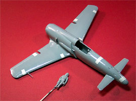

{kind=link}
{kind=link}
{kind=link}
{kind=link}


Hasegawa 1/48 Scale Kyushu J7W1 Shinden ‘Magnificent Lightning’
Kit # 09195
MSRP $17.98
Images and text Copyright © 2004 by Matt Swan
Developmental Background
A prime example of Japanese aircraft design ingenuity after the development of the Zero was the canard-type Kyushu J7W1 Shinden (Magnificent Lighting) fighter. As the only canard combat fighter seriously considered for mass production during World War II, the J7W1 remains one of the most futuristic-looking and menacing airplanes ever to fly from that period. It's shark-like profile virtually oozed violence. On the ground aircraft was very ‘leggy’ allowing the locals of ‘average’ stature to walk underneath it without ducking. In the United States, the Curtiss-Wright Company and the Army Air Corps also experimented with a canard aircraft, the Curtiss XP-55 Ascender. However, the J7W1 was apparently a more capable design.
Conceived by Captain Masaoki Tsuruno the Shinden was a radical design in response to a Japanese Navy requirement for a land-based interceptor able to counter new Allied aircraft with superior performance over existing Japanese types. From the beginning, Tsuruno believed a turbojet engine would propel the ultimate Shinden. The proposed turbojet was not yet available so the all-metal J7W1 was designed around the 2,130 horsepower Mitsubishi [Ha-43] 12 (MK9D) eighteen-cylinder air-cooled radial engine driving a six-blade metal pusher propeller. Work began in June 1944 and the first of two prototypes was finished ten months later.
Much of the design work for the J7W1 was carried out at the Air Arsenal which included a series of tests with gliders and powered craft of the canard configuration. The front-mounted horizontal surface acted as an elevator for flight control, and vertical fins were attached at mid-span. Small auxiliary wheels were added to the base of each fin to prevent tail damage upon landing. It was necessary to use a tricycle landing gear consisting of one wheel and strut mounted under the nose and two under the wings. Armament consisted of four 30 mm, Type 5 cannon placed in the nose. The weight of these large cannons helped to balance the weight of the engine and propeller at the back of the fuselage. All five wheels, including the two auxiliaries, retracted after takeoff.
Engine cooling problems and delays in the delivery of critical equipment for each airframe, kept the J7W1 grounded until August 3, 1945 when Captain Tsuruno made the first flight. He took the Shinden aloft only twice more, on the 6th and the 9th of August. The Mitsubishi Ha 43-42 was one of the most powerful engines available and generated a great deal of torque, which strongly manifested itself on this first flight. Of the few items to be corrected was the strong torque pull to the right on takeoff and noticeable vibration in the propeller and its extended drive shaft. Solutions were underway to correct these problems, but both would have been negated by the planned use of the 1,984 pound thrust Ne 130 turbojet planned for the advanced model, the J7W2 Shinden Kai. The war ended six days after Captain Tsuruno’s flight and the J7W1 ended it’s career with 45 minutes of flight time on record.
Having the appearance of a futuristic fighter for the World War II time-period, it was the only tail-first design of several throughout the world that was regarded as a production aircraft. Kyushu delivered a second prototype but this aircraft never flew. American Naval Intelligence specialists dismantled and shipped the first prototype of this aircraft to the U. S. at the end of 1945 for testing and evaluation, along with about 145 other Japanese airplanes. There is no record that anyone ever flew the J7W1 in the U. S. The Navy stored the aircraft and then transferred it to the Smithsonian in 1960.
The Kit
Like many modelers I have a particular fascination with 1946 aircraft. Most of us focus on the Luftwaffe machines but the Japanese made several interesting pieces as well. This kit has a manufacture copyright on it from 1988 yet to my great surprise, it has raised panel lines. This was the last thing I was expecting to see when I opened the box. Inside the box all the injection molded pieces (five sprues) were bundled in a single plastic bag. The small sprue of clear parts are sealed into a separate bag that also includes the decals and a painting guide. Having all the parts bundled in that one bag was a very bad idea. I have some severe abrasion marks across the sides of both fuselage pieces and across the top wing surfaces.
The wing design on this kit features a solid tip on the upper halves with a shorter lower half that butts up against it. Since there are no alignment studs this helps to line the pieces up. Unfortunately that solid wingtip has created a problem in the casting process. As the plastic cooled each wingtip developed some nasty little sink marks the will need filling. This becomes a little more complex due to the fact that there are a couple of raised panel lines running across this area and those will have to be repaired once the sink has been filled. The raised lines are very fine in nature and almost beg for rescribing. Control surfaces have deeply recessed demarcation lines. Some parts do display a little flash but nothing very serious. There is also evidence of some mold separation seams on about half the parts but these are also not very serious. There are only two areas where injector pin markings show up and that is inside both the main gear doors.
This kit includes a very nice eleven piece cockpit assembly whose only shortcoming is a lack of seatbelts. The kit also includes a very nicely detailed standing pilot figure. Interior detail on the landing gear bays looks nice and the clear parts are well cast also. The canopy comes in three sections so the model can be completed with canopy open or closed. Overall the parts fit together quite well and all panel lines seem to line up well. It is a large aircraft; in the pictures below you can see how it stacks up to a Corsair on the left and how well the basic pieces fit on the right. The kit consists of 42 gray injection molded pieces and three clear parts for a total of 45 pieces in the box.

You may click on the above images to view larger pictures
Decals and Instructions
The instructions consist of two sections; the first is a small four panel fold out printed front and back. It includes a brief paragraph covering the historical background of the aircraft in six different languages. One panel covers a pictorial parts layout with all part numbers included, two panels are devoted to the painting and decal placement for aircraft #1 which went to the States and the rest of this sheet consists of eight exploded view construction steps. Across the bottom of the large fold out is a paint code chart that covers paint numbers for Gunze-Sangyo and Mr. Color paints. There are plenty of paint call-outs throughout the instructions and the general assembly order appears quite logical and easy to follow. The second sheet of instructions is a single page with painting and decals placement instructions for a fictional home defense fighter.
The decals are quite nice looking, they look to be fairly thin with good print registry and color density. The basic markings for the two aforementioned aircraft are included along with some wing-walk markings and a few service stencils. A decal is provided for the instrument panel and some kill marking are present for the fictitious aircraft. One item I found slightly unusual was decals for the propeller tips. We get a dozen little yellow crescent decals for the front and back of each propeller tip, I think it would be easier to just airbrush the thing yellow and mask them off.
Conclusions
This is definitely another unusual aircraft that should be in any comprehensive World War 2 collection. The fit of the parts is good, the instructions are clear and the decals are of good quality. The raised panel lines are a little odd for a Hasegawa kit and almost beg to be shaved off and replaced with scribed lines. Unfortunately there are no aftermarket parts available for this kit. Hasegawa did market it under another kit number, 09122, that includes a different set of fictitious aircraft markings and a set of weighted resin tires. This kit, 09122, is still available from distributors while the review kit, 09195, is no longer available. Either way the kit looks to be an easy build if you leave the raised panel lines as is or just a little more complex if you want to rescribe it. If you are going to build aircraft #1 you should cut off the gun muzzles and cover those areas with plates as that aircraft was not armed.